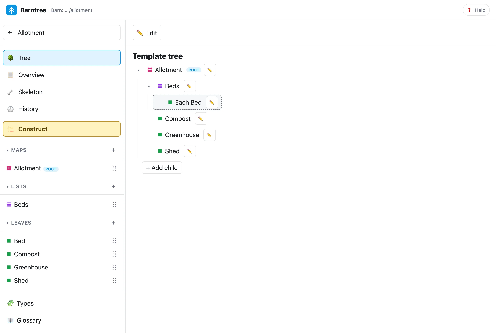
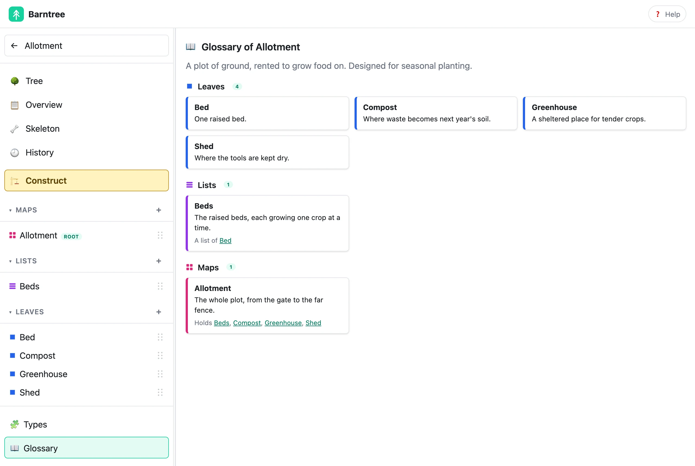
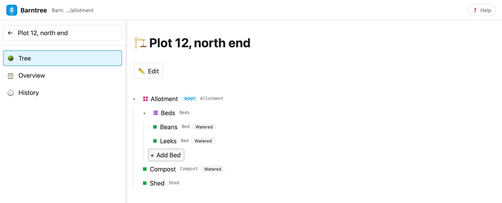

The browser app
Browse and edit the same records as the command line.
The browser app is a Template and Construction editor. It reads and writes the same records as the command line, with the same rules, so you can use either at any moment.
Start it #
$ vendor/bin/barntree guiIt serves the barn you run it in on your own machine, on port 8082 or the next free one, and opens your browser. The page names the barn it is using. Stop it with Ctrl-C.
$ vendor/bin/barntree gui --dry-run
Barntree GUI for the barn at …/allotment at http://localhost:8082 (Ctrl-C to stop)
/opt/homebrew/Cellar/php/8.5.12_1/bin/php -S localhost:8082 -t …/allotment/vendor/rmb32/barntree-gui/public …/allotment/vendor/rmb32/barntree-gui/public/index.php--port=9000 is where to start looking for a free port, --no-open doesn’t open a browser, and
--dry-run prints what would be started, as above. Outside any barn the page offers to make one in the folder it was
started in, adding only .barn/.
The catalogue #
The left side lists Constructions first, each with the name of the Template it follows, then Templates, by name. Existing Template files appear at once; there is nothing to import. Select one and the sidebar becomes that thing’s own menu, with a back arrow to the catalogue. Help in the top bar explains the words and symbols: a square marks a leaf, stacked bars a list and a grid a map.
A Template #

| Menu entry | What it shows |
|---|---|
| Tree | What the Template allows, from the root down. Maps show their fixed children by name. A dashed Each … row shows what a list repeats. Select a row to open that type’s details; Back to tree restores where you were. |
| Overview | The name, description, what it starts with, and its size. View and export and Delete are here. |
| Skeleton | A read-only, fully expanded preview of the starting tree. It follows unsaved edits. |
| History | The Template’s revisions. See Revisions and history. |
| Construct | Makes a Construction from the saved Template: a name, and a button. |
| Maps, Lists, Leaves | The types, by kind and sorted by identifier. + adds one; select one to see its meaning, tags and where it is used. |
| Types | Every type in one table, with what it holds. Filter to leaves, lists or maps; a row opens its details. Its address is shareable. |
| Glossary | Every type with its meaning, grouped by kind, so a newcomer can learn the subject’s words in one read. It shows only what you wrote. |

Editing and saving #
Viewing has no Save button. Edit starts an explicit session, with a heading, Save and Cancel. Field changes, the × on a child and drag-and-drop all share one draft. Save checks it and records the whole session as one revision, then returns to viewing. Cancel restores the saved version. Leaving a changed session offers Save, Discard or Stay, and a failed save keeps your work and says why. A notice such as Template saved confirms a save.
- Add a type. + beside Maps, Lists or Leaves. Enter the name first; the identifier follows it until you edit the identifier yourself.
- Attach one. Drag a type’s six-dot grip onto a map to add a fixed child, or onto a dashed row to replace a list’s member type. Add child and Replace member type do the same by keyboard. A drop that isn’t valid changes nothing.
- Remove a connection. The × on a child removes the connection and keeps the type.
- Change what is shared. A type used in several places changes in all of them, so the app asks, and previews anything that would be lost.
- Create, rename, delete, construct. These finish at once, record a revision and show a notice, with no second Save. Delete appears on a type only when nothing uses it and it isn’t the root.
Tags are shown as pills beside a type. They are written in the Template’s file and are not edited in the app.
A Construction #

- Tree. The real members. + Add on an eligible list asks for a name; the list’s captured type decides what is added. A member’s own page renames or removes it, and Back to tree restores the expanded branches.
- Overview. The Construction’s name and the exact revision of its source Template. The source link opens that revision read-only, without the live Template.
- History. Its own revisions.
Editing is a scoped session with Save and Cancel, as for a Template. A Construction has no drag-and-drop and no type editor: its required children and captured types are read-only.
View and export #
View and export, under a Template’s Overview, asks you to resolve pending edits and then previews the saved tree as Tree, Document, Folders or Diagram. Read a Tree another way covers each one.
A Template also opens by address: /?tree=Allotment.